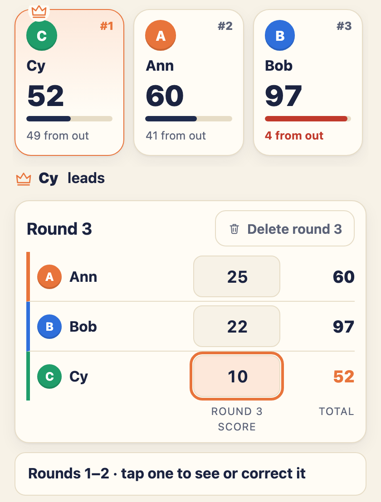
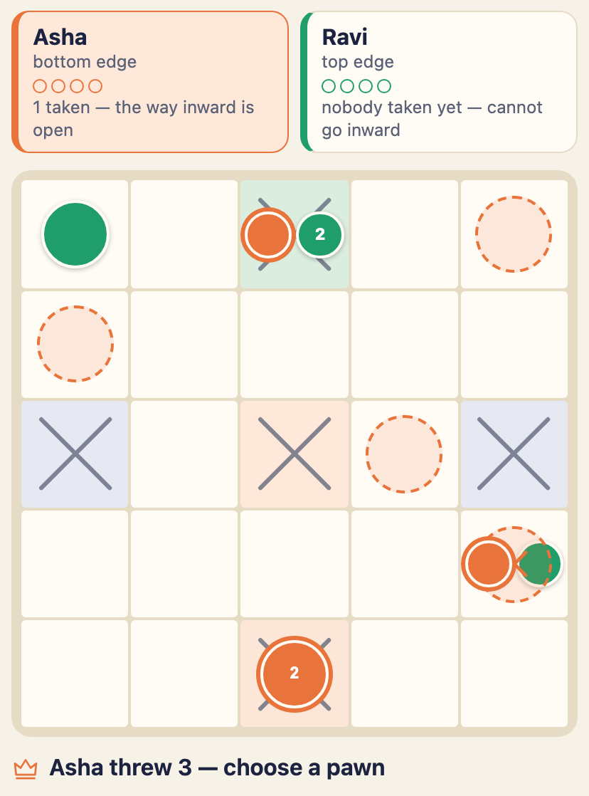
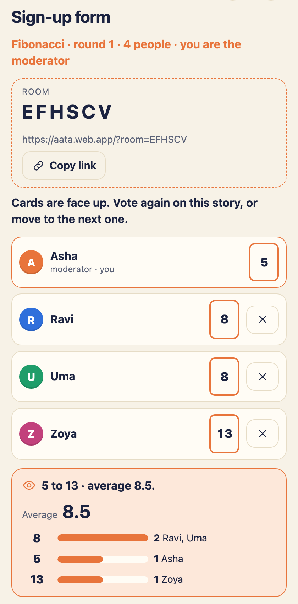

Aata aa·ta Kannada for play, or a game
Keep the score for any game.
Round by round, totals as you type — and it knows which way each game is won, so 20 is winning at Poker and losing at Rummy. There is a board to play on too, chowka bara, and planning poker for sizing work as a team.

No account. No signal needed.
Open it and start scoring. There is nothing to sign up for, nothing to install, and nothing that stops working on a train.
Scores stay on your phone
The scoresheet and the chowka bara board are kept in your own browser and never sent anywhere. No account, no analytics and no advertising.
Works offline
Add it to your home screen and it opens like an app. Scores and the board work with or without a connection — planning poker needs one, being a room shared between phones.
It knows who won
Lowest total, highest total, a target that ends the game, a score that knocks a player out — it works the winner out and says which rule decided it.
Games it already knows
Pick one and the rules are set for you. Every number is yours to change before you start, because tables disagree — and anything not on the list is what Something else is for.
And a board to play on: chowka bara
Also called ashta chamma and daayam. Cowrie shells, and pawns that go anticlockwise round the outside, then inward — every loop inside runs the other way, clockwise, to the centre. The 5×5 board has four shells and four pawns each; the 7×7 has six of both. No pieces to lose under the sofa.

And planning poker, for the team
Size stories together, everyone on their own phone. Whoever starts a room is the moderator: they share a six-character code or a link, and the team joins with nothing but a name — no accounts, nothing to install.

How it keeps score
A game does not need a rulebook to be scored. It needs three facts.
Small things that matter at a table
An empty box is not a nought
A player nobody has scored yet is not winning a lowest-wins game. Aata says whose score is missing instead of crowning them.
Fix round three
Every score can be corrected, every round deleted, every player renamed — and the totals are worked out again.
Minus scores
Hearts and some Rummy variants go below zero, and a phone's number pad has no minus key — so there is a button for it.
Any number of players
Players go down the card, not across it, so a seventh player is one more row — never a scoresheet you scroll sideways to read.
A fanfare for the winner
A sound when a game ends, a pawn gets home, or somebody is sent back to start. One tap turns them off, and your phone remembers.